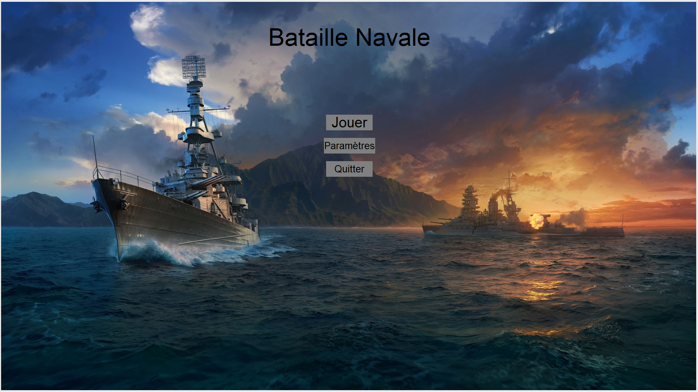
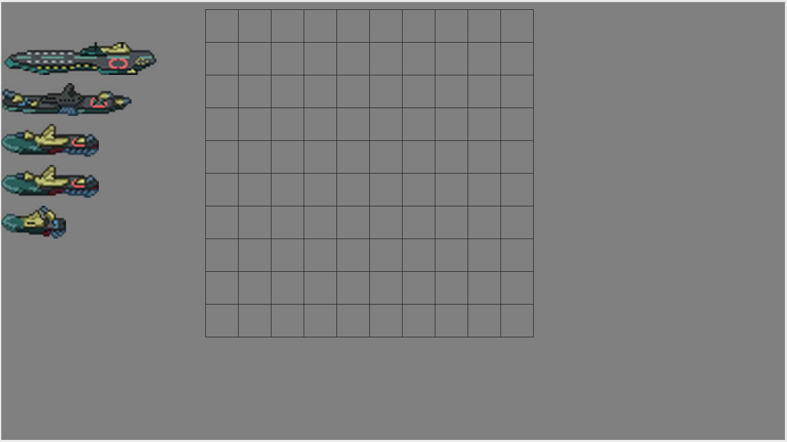
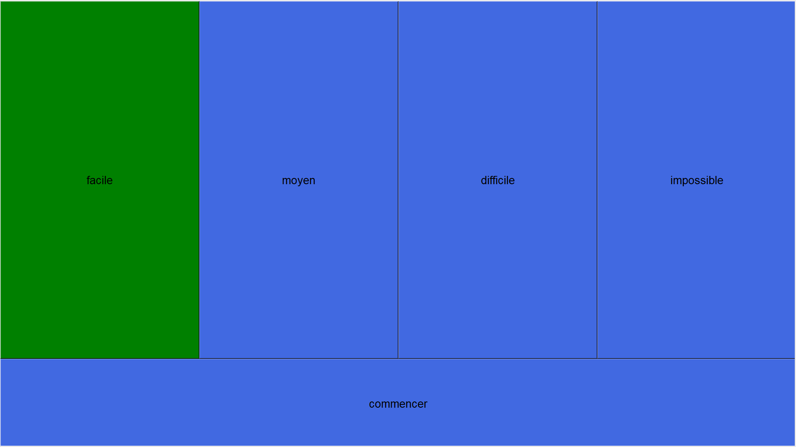
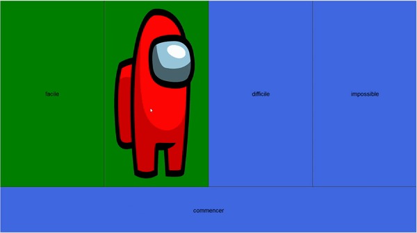
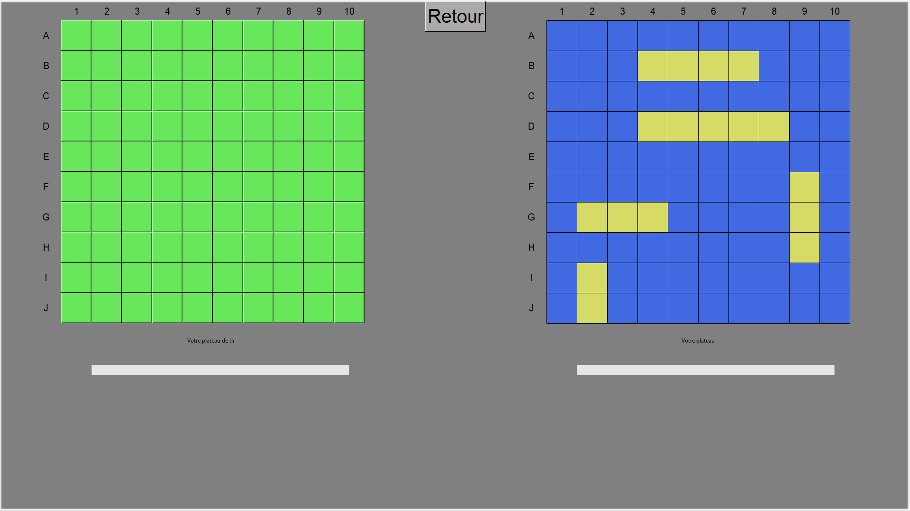
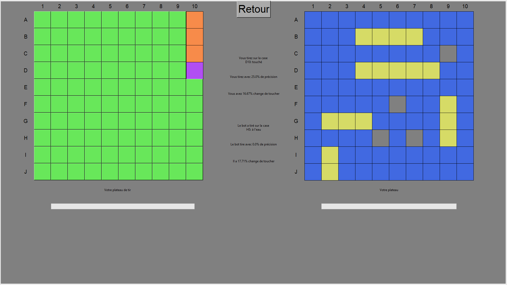
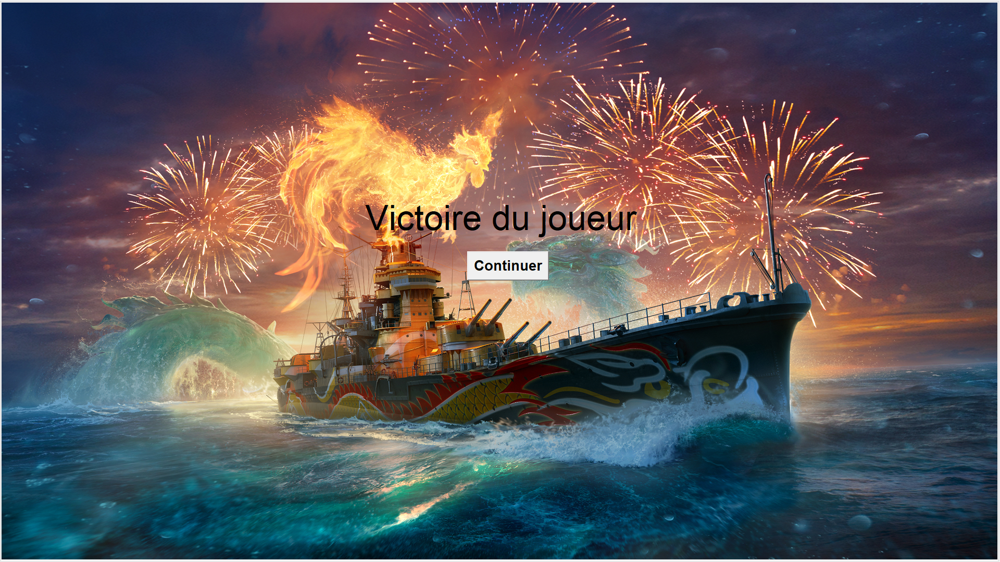

Bonjour et bienvenue dans le manuel d'utilisation de notre jeu de bataille navale.
Le jeu contient 7 pages distinctent que nous allons détailler dans l'ordre. Il sera supposé dans ce texte que le numéro des pages correspond à celui qu'elles ont dans le code.
Par exemple la page de paramètres sera la cinquième même si elle est accessible dès le début.
Pour arriver sur la première page il vous suffira de lancer le jeu. Vous trouverez alors trois boutons appelés "Jouer", "Paramètres" et "Quitter".

Appuyer sur le premier bouton lancera la partie et vous dirigera vers la deuxième page du jeu.
Le bouton "Quitter" permet comme son nom l'indique de quitter le jeu.
Le second bouton quant à lui permet d'arriver sur la page des paramètres qui est, comme dit plus tôt, la page numéro cinq. Sur cette page on trouvera 8 boutons.

Celui qui se trouve tout en haut permet de revenir sur la première page. Les autres permettent de changer la couleur de l'élément qui correspond à leur nom.

Ce changement de couleur se remarquera sur la page quatre que nous verrons plus tard.
Une fois sur la troisième page après avoir appuyé sur le premier bouton vous trouverez la page de placement des bateaux comme ci-dessous.

Vous pouvez déplacer les cinq bateaux sur le côté en cliquant dessus avec le clic gauche de la souris
pour le sélectionner puis en gardant appuyé le clic gauche et en glissant la souris.
Avec un clic droit vous pouvez faire pivoter le bateau de 90°. Un autre clic droit lui fera reprendre son orientation originelle.

Une fois que tous les bateaux sont dans le quadrillage et qu'ils ne sont pas superposés un bouton apparaît.
En cliquant dessus vous arriverez sur la troisième page: le choix de la difficulté.
Les quatres boutons permettent de choisir la difficulté voulu.
En difficulté facile l'ordinateur tirera complètement au hasard.
En moyen l'ordinateur tirera à coup sûr sur une case de bateau une fois sur cinq.
En difficile il tirera une fois sur deux sur un bateau.
En impossible il ne ratera qu'une fois sur trois.
En cliquant sur un bouton son image de fond change vous indiquant la difficulté que vous avez sélectionné.

Quand vous aurez choisi votre difficulté vous pourrez cliquer sur le bouton "Commencer" qui vous emmenera sur la quatrième page.

Le bouton "Retour" en haut de l'écran permet de revenir à la première page. Le bouton "Jouer" vous ramenera désormais sur la page des plateau.
Sur cette page vous pouvez voir à gauche le plateau de l'adversaire et le votre à droite avec vos bateaux placés dessus.
Les couleurs des cases dépendent de celles dans la page des paramètres.
Il est toujours possible de les changer même en pleine partie en revenant sur le plateau de départ grâce au bouton "Retour" comme dit au dessus.
En dessous de chaque plateau se trouve une barre blanche représentant la barre de vie des joueurs. Elle changera de taille en fonction du nombre de case de bateau restantes.
Quand vous cliquerez sur une case du plateau adverse elle changera de couleur indiquant si il s'agit d'un bateau qui a été touché ou d'un case d'eau.
L'ordinateur tirera alors automatiquement et instantanément sur votre plateau. A chaque tir 3 informations par joueur s'affichent.

La case sur laquelle le joueur a tiré, son taux de précision depuis le début de la partie et la probabilité qu'il touche un bateau au prochain tire.
Bien sûr les statistiques de l'ordinateur ne servent à rien si il n'est pas en difficulté facile étant donné qu'il touche à coup sûr la plupart du temps.
Quand un des deux joueurs n'a plus de cases le jeu s'arrête et la sixième page apparaît.

C'est un écran de victoire avec le nom du vainqueur. En appuyant sur le bouton on arrive sur la dernière page, celle des crédits.

On y trouve les remerciments et les explications des références pour les niveaux de difficulté.
Amusez vous bien sur ce jeu de bataille navale.
.